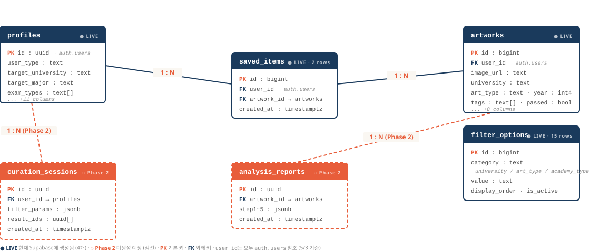

미대 입시 시장의 정보 격차 — 학원에 다니지 않으면 합격작에 접근할 길이 없다.
학생의 목표 대학·전형·취향을 학습해, 합격 가능성이 높은 작품을 골라준다.
10대 후반~20대 초반 미대 입시 수험생. 정보 접근에 따라 세 부류로 나뉜다.
각 단계마다 어떤 데이터가 어느 테이블에 쌓이는지 — BOAZ 팀이 데이터에 접근할 때의 출처가 된다.
5/3 기준 실제 Supabase 스키마. LIVE 4개(profiles · artworks · saved_items · filter_options) + Phase 2 예정 2개(점선).

4/11에 함께 짚었던 "데이터 양 적음" 그대로다. 현황을 솔직히 보여드리고, 5월 안에 어디까지 채울지를 약속한다.
서비스의 모든 추천과 분석은 이 테이블에서 출발한다. 이미지·태그·합격 정보가 함께 저장된다.
description, image_path. 이미지는 Supabase Storage에 저장.
사용자가 "좋아한 작품"과 "탐색한 흐름"이 모두 기록된다. 이 두 데이터로 개인화 모델을 만들 수 있다.
{ user_id, artwork_id, created_at } 한 행이 INSERTfilter_params JSONB로 어떤 조건을 걸었는지 저장result_ids에 보여준 작품 ID 배열 저장학생이 자신의 작품 또는 합격작을 업로드하면, VLM(Vision Language Model)이 5단계 리포트를 생성한다. 4/11에 함께 논의했던 그 기능이다.
4/11에 함께 정한 "학원 협조 + 핀터레스트형 + B2B 먼저" 방향을 그대로 작동 가능한 단계로 풀었다.
프론트는 Vercel, 백엔드·DB는 Supabase(RLS 적용). 자체 GPU 학습 노드(500만원짜리 데스크탑, ArtPrep 보유)를 BOAZ가 학습·실험에 자유롭게 사용할 수 있다.
"step2(VLM) 구현 + 추천시스템까지" — 그 두 줄기를 1·2 우선순위로. 3·4번은 여유가 생기면 또는 병렬로.
10주 스프린트 (4/22 → 6/27) · 100명 베타 목표 · 1차 점검 5/21 · 최종 점검 6/20.
왼쪽은 4/11에 합의한 사항의 현재 상태. 오른쪽은 오늘 5/3 미팅에서 결정해야 할 사항.